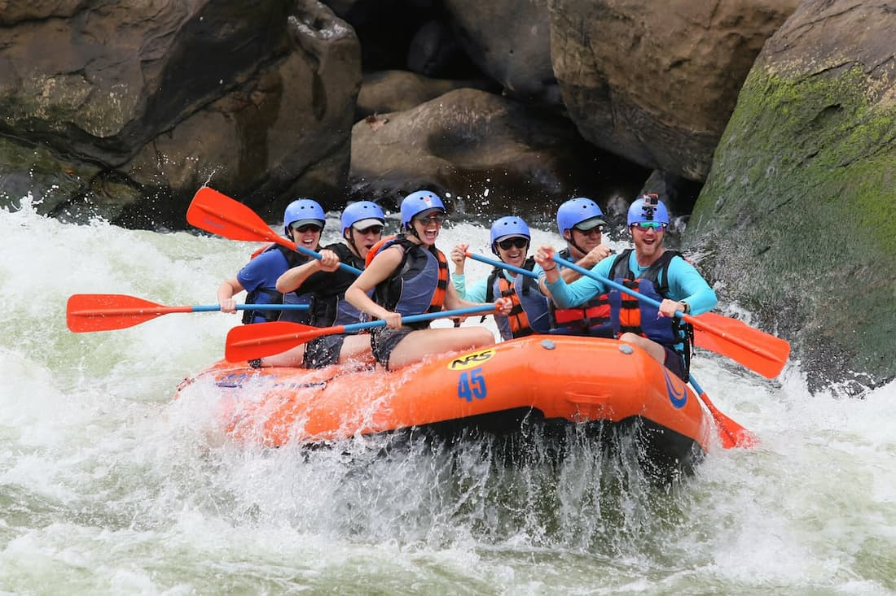
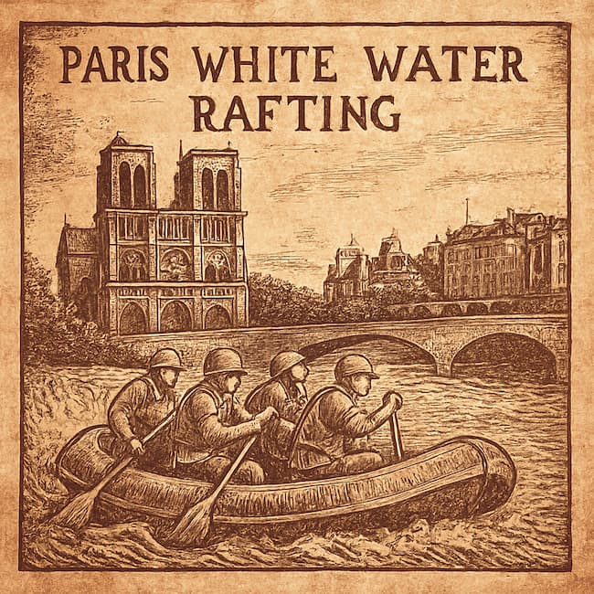

Paris White Water Rafting

Paris White Water Rafting, designed to reflect adventure, cultural pride, and environmental
stewardship. We ignite the spirit of adventure by offering unforgettable experiences that show the
thrill of nature. We are committed to delivering world-class rafting adventures that prioritize
safety, sustainability, and storytelling by combining expert guides, pristine rivers, and the
cultural charm of Paris, we create journeys
that inspire, challenge, and connect. “Ride the Rapids. Feel the Culture.”
Founded in 2012 by a group of adventure enthusiasts and former competitive rafters, Paris White Water
Rafting began as a
bold idea: Starting with just two rafts and a handful of guides, the company launched its first tours in
the
fast-moving alpine river of Benue. Word spread quickly, and by 2015, Paris White Water
Rafting had expanded to offer multi-day expeditions, corporate retreats, and eco-tourism packages. In
2018, the company
introduced its signature Glory Rapids Experience,” a themed

adventure that
combined rafting with cultural storytelling, making it a hit with international tourists. With a
commitment to safety,sustainability, and unforgettable experiences, Paris White Water Rafting has
grown
into one of the most recognized names in African adventure tourism.Today, the company operates
across
several rivers in Africa and continues to innovate with new gear, training programs, and community
outreach — all while keeping the spirit of Benue alive in every splash.